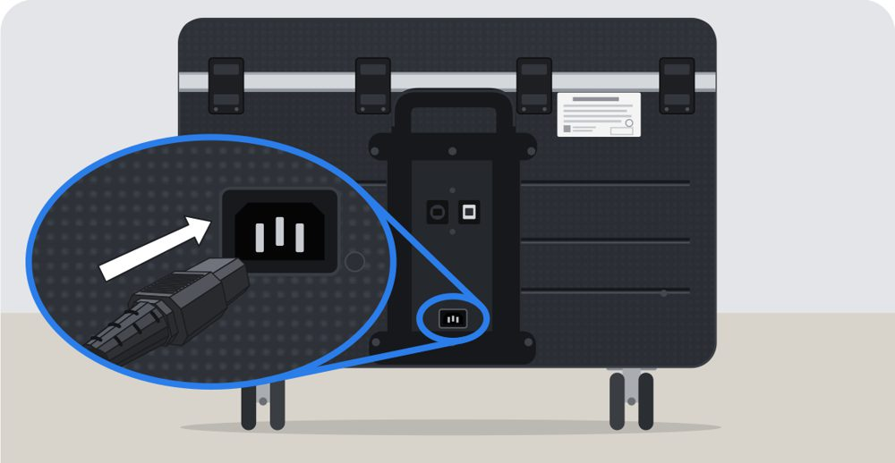
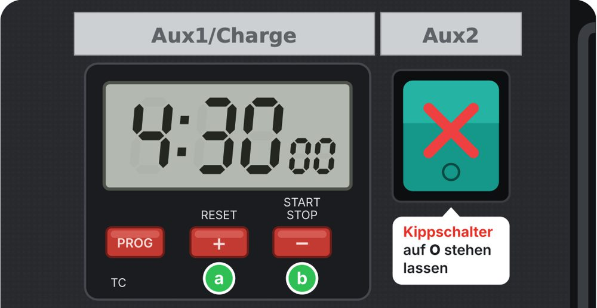

Anleitung · iPad-Koffer
Einräumen
Alle iPads in den Koffer mit der richtigen Farbe einsortieren. Dieser Koffer ist .
Anschließen
Alle iPads am Ladekabel anschließen.

Strom
Ladekabel an der Rückseite des Koffers einstecken.

Laden starten
Den Kippschalter (Aux2) auf O stehen lassen.